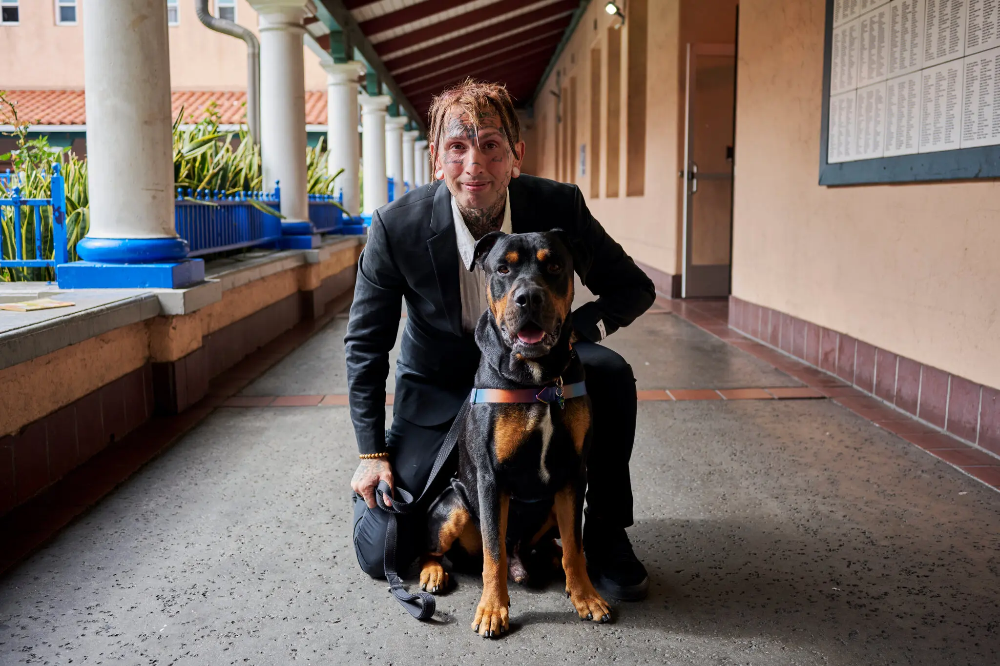

She Slept in Her Car for 3 Weeks Rather Than Leave Her Dog — The US & UK Are Finally Fighting Back with Pet-Friendly Homeless Shelters


📋 What You'll Learn in This Article
- The Scale of the Crisis — Numbers That Will Shock You
- Why Thousands Choose the Streets Over Surrendering Their Pet
- Father Joe's Villages — San Diego's Gold Standard for Pet-Friendly Shelter
- The PUPP Act 2025 — Federal Law That Could Change Everything
- Domestic Violence Survivors: The Hidden Reason Pets Are Life or Death
- Noah's Animal House — The Shelter Born from One Woman's Refusal to Give Up
- The PAWS Act & Purple Leash Project — Turning Policy Into Reality
- UK: Dogs Trust Together Through Homelessness
- StreetVet & Battersea: The UK's Biggest Alliance Yet (2025)
- The UK Parliament Petition — A Country Demanding Change
- How to Find a Pet-Friendly Shelter Near You — Full Resource Directory
- How You Can Help — Donate, Volunteer, Advocate
- Frequently Asked Questions
Benjamin Noss had been sleeping rough in San Diego for months before he finally found somewhere that would take him in — without making him choose between a roof over his head and the small chiweenie mix who had become his entire world. "She's part of me," he told reporters when he arrived at Father Joe's Villages with his dog Babygirl. "I feel like she saved me, and I saved her." Six weeks later, he was enrolled in culinary school and on track to graduate. His turning point wasn't willpower alone. It was the fact that a shelter finally said yes to both of them.
Across the Atlantic, a woman in a UK hostel tearfully told support workers she had spent three weeks sleeping in her car in a supermarket car park before accepting help — because not a single shelter in her area would allow her cat. These are not rare edge cases. According to researchers and shelter operators on both sides of the ocean, stories like these represent a vast, largely invisible barrier keeping hundreds of thousands of vulnerable people out of the housing system every single year.
This is the full story of the growing movement — backed by legislation, charity alliances, and ordinary people refusing to accept an impossible choice — that is slowly dismantling the wall between homeless people and the shelter they desperately need.
🔑 Key Fact: On a single night in January 2024, 771,480 people were experiencing homelessness in the United States — the highest figure recorded since data collection began in 2007 (HUD Annual Homeless Assessment Report, 2024). An estimated one in three of those individuals has a pet, meaning over 254,000 animals are homeless right alongside their owners.
The Scale of the Crisis — Numbers That Will Shock You
Homelessness in both the US and UK reached crisis proportions in recent years, and the numbers behind the pet problem are staggering when you see them laid out together. In the United States, the 2024 HUD Point-in-Time count recorded a total of 771,480 unhoused people on a single January night — an 18% increase from 2023 and the steepest year-on-year rise since records began. Of that population, an estimated one-third own at least one companion animal, translating to well over 254,000 pets directly affected by homelessness (National Alliance to End Homelessness, 2023).
In the United Kingdom, the picture is equally grim. Approximately 300,000 people are experiencing some form of homelessness, according to StreetVet, with studies from 2023 estimating that between 10 and 25% of them have a pet. Homeless Link, the national charity supporting homelessness organisations across England, confirmed in late 2025 that the lack of pet-friendly accommodation remains one of the most persistent and least discussed barriers in the entire housing system.
What makes these figures particularly painful is that the barrier isn't always poverty, addiction, or mental illness. Sometimes it is simply a "no pets allowed" sign on a shelter door. Research published in the Animal Welfare journal in 2024 found that 47% of homeless participants lived with their dog in a tent and 45% in a vehicle — meaning nearly all of them had access to some form of improvised shelter, but refused to enter the formal system because doing so meant giving up their animal.
Why Thousands Choose the Streets Over Surrendering Their Pet
The National Alliance to End Homelessness conducted a survey that produced a figure shelter operators find haunting: 22% of unhoused individuals said they avoided shelters specifically because their pets were not allowed. A separate study found that 48% of unhoused pet owners had physically been turned away from a shelter because of its pet policy. The Arizona Pet Project, working with homeless shelters in Maricopa County in 2025, put it most starkly: research shows one in five individuals experiencing homelessness will refuse shelter entirely if their pet cannot come with them.
This is not stubbornness. The academic literature on the psychology of homelessness consistently shows that pets function as an anchor, a source of identity, and a primary emotional support system for people who have lost most other social connections. Sociologist Leslie Irvine found that pet ownership actually prompts many unhoused people to act more responsibly — deliberately avoiding alcohol, drugs, and dangerous company out of fear of being separated from their animal. Homeless pet owners will skip meals, refuse housing, and sleep in the rain rather than surrender the one relationship in their lives that offers unconditional acceptance.
Data collected between 2019 and 2023 added another dimension to this: animals relinquished by unhoused owners were among the most at risk for euthanasia or other shelter death. For someone who knows that surrendering their dog to animal control is likely a death sentence for that dog, refusing shelter is not irrational — it is an act of love and loyalty that the system currently punishes with destitution.
🩺 Clinical Perspective: In my practice, I have seen the bond between an unhoused person and their pet operate as a genuine form of medicine — reducing anxiety, providing structure, and giving someone a reason to seek help they would otherwise decline. When a shelter turns that person away because of a "no pets" policy, it does not just leave an animal without care. It leaves a human being without the one relationship that was keeping them functional enough to ask for help in the first place.
Father Joe's Villages — San Diego's Gold Standard for Pet-Friendly Shelter
If you want to understand what a pet-inclusive shelter can look like at scale, the best place to start is Father Joe's Villages in San Diego. The nonprofit, which has helped homeless people in the city for over 75 years, began accepting service and emotional support animals back in 2010. In 2020 it took the decisive step of opening its doors to all pets — no restrictions, no exceptions beyond what is required by law.
The results have been remarkable. In the 15 years since the shelter first started welcoming animals, more than 830 pets have entered and stayed at Father Joe's alongside their owners. In 2021 alone, 103 households with 120 animals moved in — and critically, 100% of pet owners surveyed at Father Joe's said having their companion animals with them directly helped them work toward ending their homelessness. That is not a marginal benefit. That is a complete sweep.
In August 2022, the California Department of Housing and Community Development awarded Father Joe's a $548,000 grant through its Pet Assistance and Support Program. The funding covers staffing, pet food, veterinary care, training classes, and the creation of a dedicated pet bathing area. The shelter places crates directly next to residents' beds so owners and animals can sleep side by side. There are private and communal yards for exercise and private time. Chief Client Services Officer Jesse Casement summed it up simply: "We didn't build a new building. We welcome pets into our existing shelter spaces."
📊 At Father Joe's Villages: As of early 2026, 35 animals are living with 32 residents. Since 2010, the shelter has served 605+ animals across 438 households. 100% of pet-owning residents said their animals helped them move toward stable housing.
The shelter's open house events, attended by representatives from major providers including Pine Street Inn in Boston (the largest homeless service provider in Massachusetts) and Shepherd's House in North Carolina, have turned Father Joe's into a working model for the national movement. My Dog Is My Home, the nonprofit that partners with shelters to implement pet-friendly policies, called the evolution at Father Joe's "a game-changer" and expressed hope that providers across San Diego and beyond would follow.
The PUPP Act 2025 — Federal Law That Could Change Everything
For years, the pet-friendly shelter movement depended almost entirely on the goodwill of individual organisations and private donors. That may be changing. In August 2025, a bipartisan coalition of US Congress members — led by Representative Brian Fitzpatrick (R-PA-1), Co-Chair of the Congressional Animal Protection Caucus, alongside Representatives Jason Crow (D-CO-6), Brittany Pettersen (D-CO-7), and Mike Lawler (R-NY-17) — introduced the Providing for Unhoused People and Pets Act of 2025, better known as the PUPP Act (HR 4921).
The bill would authorise the US Department of Agriculture and the Department of Housing and Urban Development to award $5 million per year, for four consecutive years, to local governments, nonprofits, and shelter providers. The money can be used to retrofit existing properties, cover pet-related operating costs, and fund basic veterinary and behavioural services for residents' animals. Across the country, more than 70,000 Americans experiencing homelessness are known to own pets — and in most communities, suitable shelter for those individuals simply does not exist.
The PUPP Act has won endorsements from the ASPCA, Best Friends Animal Society, the Animal Welfare Institute, the American Bar Association, and dozens of other national organisations. Susan Riggs, senior director of housing policy at the ASPCA, captured the central argument in a single sentence: "Unhoused people with pets will often refuse assistance if it means giving up their pet, further exacerbating the homelessness crisis." The PUPP Act would ensure they do not have to make that choice.
Domestic Violence Survivors: The Hidden Reason Pets Are Life or Death
Nowhere is the pet barrier more dangerous than in the context of domestic violence. The statistics here are not just striking — they are an indictment of a system that has failed survivors in the most fundamental way possible. According to data compiled across 12 studies and published by RedRover, between 18% and 48% of domestic violence survivors have either delayed leaving an abusive situation or returned to their abuser because of concerns about their pets' safety. Other research puts the figure for delay even higher: between 25% and 50% of victims postpone leaving, and some stay with their abuser for up to two years longer than they would otherwise, solely because they cannot find safe accommodation for their animal.
The mechanism of abuse that drives this is well documented. Abusers frequently threaten, harm, or kill their partners' pets as a tool of control and intimidation. A 1999 study found that 87% of pet abuse by domestic abusers occurs in the presence of the victim, specifically for the purpose of demonstrating power. Up to 75% of women entering domestic violence shelters report that their abuser had threatened or harmed their pets. The result is a cruel trap: the survivor cannot leave because she is terrified of what will happen to her cat or dog if she goes — and most shelters, even if they could take her, cannot take the animal too.
⚠️ Critical Statistic: As of May 2024, fewer than 20% of domestic violence shelters in the United States were equipped to accommodate pets. As a result, more than half of survivors who do enter DV shelters are forced to leave their animals behind — often with their abuser. (The Friendship Center, 2024)
A survey of survivors found that 65% said concerns about their pets' safety affected their decision to enter a shelter, with 88% of those reporting that they delayed seeking help specifically because of this. Up to 40% of DV victims remain in dangerous relationships because they cannot find any alternative living arrangement that includes their pet. The National Domestic Violence Hotline has reported that 97% of callers identified fear for their animals' welfare as a factor in their decision-making, and 50% said they would not leave unless their pets' safety could be guaranteed.
Noah's Animal House — The Shelter Born from One Woman's Refusal to Give Up
The story of Noah's Animal House begins with a single encounter. Staci Alonso, then a board member at The Shade Tree shelter — Clark County's primary 24-hour emergency facility for homeless women and children in Las Vegas — met a woman who refused to leave her abusive partner because there was nowhere in Nevada where she could go and take her pet with her. Alonso fostered the woman's dog herself that day, but she vowed it would be the last time the shelter's "no pets" policy kept a survivor in danger.
In 2007, Alonso opened Noah's Animal House — the first stand-alone animal sanctuary built directly on the grounds of a domestic violence shelter anywhere in the United States. Located next door to The Shade Tree in Las Vegas, Noah's offered what the formal shelter system had never provided: a place where families and pets could stay together, separated only by a courtyard, with daily "cuddle rooms" for bonding time, on-site veterinary care, and zero breed restrictions.
By 2018, the model had expanded to Reno, in partnership with the Domestic Violence Resource Center. Together, the two Nevada facilities feature 86 kennels, accept all animals legal to own in the state (including horses, hamsters, and reptiles), and have sheltered more than 1,900 pets across over 100,000 boarding nights. Both facilities are completely free to residents of their partner DV shelters. The programme's outcomes also revealed something the founders had hoped for but not predicted: the recidivism rate — the proportion of women who leave and return to their abuser — is measurably lower among residents who have their pets with them throughout their stay.
The PAWS Act & Purple Leash Project — Turning Policy Into Reality
The legislative foundation for pet-friendly DV shelters in the US came in 2018 with the passage of the Pet and Women Safety (PAWS) Act, which was signed into law as part of the Farm Bill. The PAWS Act authorises a federal grant programme, administered initially through the US Department of Justice, specifically to help domestic violence shelters create pet-friendly options for survivors. By 2022, Congress had fully funded the programme at $3 million annually — a $500,000 increase from the previous year, following strong bipartisan demand from 204 House members and 43 Senators.
Running alongside the legislative work is the Purple Leash Project, a partnership launched in 2019 between the animal welfare organisation RedRover and pet food company Purina. The Purple Leash — symbolising both domestic violence awareness and the human-animal bond — became a national awareness campaign and practical funding mechanism. Their specific goal: to ensure that 25% of domestic violence shelters in the United States become pet-friendly, a target they set for 2025. Today, every single US state has at least one pet-friendly DV shelter — but with fewer than 20% of shelters nationwide able to accommodate animals, the 25% target has yet to be fully met, and the Purple Leash Project continues its work into 2026.
UK: Dogs Trust Together Through Homelessness
In the United Kingdom, the equivalent of the PUPP Act and Noah's Animal House is the Dogs Trust Together Through Homelessness programme — and it operates with a scope that makes it one of the most comprehensive initiatives of its kind anywhere in the world. The programme (formerly known as the Hope Project) runs three interconnected strands of support for dog owners experiencing homelessness.
The first is a free veterinary scheme, delivered through a network of partner vet practices across the UK, which provides essential medical treatment to dogs whose owners are currently experiencing homelessness. The second is an endorsement scheme, through which Dogs Trust works directly with temporary accommodation providers — hostels, emergency housing, transitional housing — to help them develop practical, responsible dog-friendly policies and earn official endorsement. The third is an online directory of dog-friendly homelessness services, built in partnership with Homeless Link, which lists more than 9,000 homelessness services across England and makes it searchable for dog owners in crisis.
In December 2025, Dogs Trust delivered festive care packages to hundreds of homelessness services across the UK — a small but visible symbol of a programme that takes the daily realities of homeless pet owners seriously. As the charity puts it: "No one should be forced to choose between their dog and a safe place to sleep." In the UK, the Homelessness Code of Guidance already instructs local authorities to give special consideration to pet owners when placing them in emergency accommodation — but as a 2026 Freedom of Information request to councils across England revealed, the provision of genuinely pet-friendly temporary accommodation remains inconsistent and largely unfunded.
StreetVet & Battersea: The UK's Biggest Alliance Yet (2025)
If Dogs Trust represents the policy and housing side of the UK's response, StreetVet represents the veterinary front line. Founded in 2016 by two practising vets, Jade Statt and Sam Joseph, after a chance street encounter with a homeless man and his dog, StreetVet has grown into a national charity with over 300 volunteer vets and veterinary nurses operating at 23 locations across England, Wales, and Scotland. Their model is simple and radical: take the consulting room to the pavement. Anything that can be done in a standard vet's surgery — vaccinations, microchipping, blood tests, nail clipping, emergency wound care — StreetVet volunteers do on the streets, for free.
In June 2025, StreetVet announced a formal strategic alliance with Battersea Dogs and Cats Home, one of the UK's best-known and most-funded animal welfare charities. The partnership, backed by a multi-year Battersea grant, aims to expand StreetVet's outreach locations significantly — potentially doubling the number of communities served — over the next five years. With an estimated 300,000 people experiencing homelessness in the UK and as many as 25% of them owning a pet, both organisations describe the scale of unmet need as urgent.
🇬🇧 StreetVet by the numbers (UK, 2025): Over 2,629 pets supported. More than 14,400 volunteer hours dedicated. Over 10,190 consultations completed across the UK. Now expanding with Battersea to nearly double its reach.
StreetVet also runs an Accredited Hostel Scheme, which provides training, support, and a formal accreditation to hostels and temporary accommodation centres that choose to become pet-inclusive. Since its launch in 2020, more than 35 hostels have joined the scheme — each one representing another doorway that a homeless pet owner can walk through without having to leave their animal behind. In 2024, StreetVet Cornwall alone registered 396 patients and conducted 1,941 consultations, taking on five to ten new patients each month. The charity has also noted that more than a third of new patients require expensive veterinary intervention averaging £458.74 per consultation, because their animals have had no access to routine preventative care before reaching StreetVet — a cost that would otherwise fall entirely on already-stretched owners or result in serious suffering for the animals.
The UK Parliament Petition — A Country Demanding Change
Public pressure in the UK has begun to move beyond charity and into the political arena. In 2025 and into 2026, a parliamentary petition calling on the UK Government to require homeless shelters and temporary housing providers to allow pets gathered over 4,000 signatures on the official Parliament website — with a target of 10,000 needed to trigger a Government response. The petition argues that current Social Housing Consumer Standards do not protect people with pets, forcing many to choose between shelter and their companion, and calls for those standards to be updated to require compliance.
Homeless Link, meanwhile, hosted a major Practice Forum in November 2025 in partnership with StreetVet and Dogs Trust, bringing together frontline homelessness services to share learning on how to become pet-inclusive. The message from service providers who had already made the transition was consistent: the challenges are manageable, the impact on residents is transformational, and the barriers are mostly perceptual rather than practical.
How to Find a Pet-Friendly Shelter Near You — Full Resource Directory
If you or someone you know is facing homelessness with a pet, the following resources are the most comprehensive and up-to-date currently available. Policies are changing quickly, and what was not possible six months ago may be possible now.
In the United States: The best starting point is My Dog Is My Home (mydogismyhome.org), which maintains a database of pet-friendly shelters and resources and runs a Co-Sheltering Collaborative to help providers implement inclusive policies. The Animal Welfare Institute's Safe Havens for Pets directory (awionline.org) was expanded in 2025 to include listings from all 50 states, searchable by zip code. For domestic violence situations specifically, contact the National Domestic Violence Hotline at 1-800-799-7233 and ask specifically about pet-friendly options — trained advocates can search by location. Feeding Pets of the Homeless (petsofthehomeless.org) provides free pet food and basic care supplies at collection points across the country.
In the United Kingdom: The Dogs Trust Together Through Homelessness directory at dogstrusthopeproject.org.uk lists endorsed dog-friendly homelessness services across England and is built in partnership with Homeless Link's database of over 9,000 services. StreetVet (streetvet.co.uk) can refer people to hostels in their StreetVet Accredited Hostel Scheme, which have been trained and equipped to welcome pets. The charity Dogs on the Streets (DOTS) provides food, medical aid, housing support, and fostering options for homeless dog owners across the UK. In any emergency, contact your local council directly — the Homelessness Code of Guidance legally requires them to give special consideration to pet owners when placing them in emergency accommodation.
How You Can Help — Donate, Volunteer, Advocate
The organisations doing this work are chronically underfunded relative to the scale of the need they face. There are several ways to contribute meaningfully, regardless of where you are or what resources you have.
Donate supplies: Pet food, crates, leads, bedding, and basic veterinary supplies are always needed. Contact your local pet-friendly shelter or food bank directly to find out what they currently need most.
Volunteer: StreetVet in the UK actively recruits veterinary professionals and support volunteers. In the US, My Dog Is My Home and local shelter programmes often need dog walkers, animal carers, and administrative help.
Advocate: In the US, contact your members of Congress and urge them to co-sponsor the PUPP Act (HR 4921) — you can do this directly through the ASPCA's action centre at aspca.org. In the UK, sign the Parliament petition at petition.parliament.uk and contact your MP to ask what your local council is doing to accommodate pet owners in housing crisis.
Spread awareness: Many people do not know that this problem exists, or that there are organisations working to solve it. Sharing this article, or the resources above, costs nothing and could reach someone who needs them.
Frequently Asked Questions
Q: Are there homeless shelters that allow pets in the US?
A: Yes, a growing number do, though they remain a minority of all shelters. Father Joe's Villages in San Diego has accepted all pets since 2020 and has housed over 830 animals in 15 years. In the US, you can search the My Dog Is My Home database (mydogismyhome.org) or the Animal Welfare Institute's Safe Havens for Pets directory by zip code. The PUPP Act of 2025 (HR 4921), currently in Congress, would provide $5 million per year in federal grants to help more shelters make the transition.
Q: Why do homeless people refuse shelters because of their pets?
A: Research consistently shows that for many unhoused people, their pet is their primary source of emotional stability, structure, and unconditional support. A National Alliance to End Homelessness survey found 22% of unhoused individuals avoided shelters because pets were banned. Another study found 48% had been physically turned away because of a pet. One in five unhoused people will refuse shelter entirely if they cannot bring their animal. Surrendering their pet — particularly to animal control, where the risk of euthanasia is high — is not an option many are able to accept.
Q: What is the PUPP Act 2025 and what would it do?
A: The Providing for Unhoused People and Pets Act of 2025 (HR 4921) is a bipartisan bill introduced in the US Congress. If passed, it would authorise the USDA and HUD to award $5 million per year for four years to homeless shelters, transitional housing, and permanent housing providers to retrofit facilities for pets, cover pet supply costs, and fund basic veterinary and behavioural services. It is supported by the ASPCA, Best Friends Animal Society, the Animal Welfare Institute, and the American Bar Association, among others. More than 70,000 Americans experiencing homelessness are currently known to own pets.
Q: Are there pet-friendly domestic violence shelters?
A: Yes, but there are far too few. As of May 2024, fewer than 20% of DV shelters in the US are equipped to accommodate pets. Noah's Animal House (noahsanimalhouse.org) in Las Vegas and Reno, Nevada has been operating since 2007 and 2018 respectively, with 86 free kennels next door to partner DV shelters, on-site vet care, and no breed restrictions. The Purple Leash Project (Purina and RedRover) is working to reach 25% of US DV shelters being pet-friendly. The PAWS Act (2018) provides federal grant funding for DV shelters to create pet-friendly options. In the UK, Dogs Trust Together Through Homelessness maintains a directory of dog-friendly services at dogstrusthopeproject.org.uk.
Q: How can I find a pet-friendly homeless shelter near me?
A: In the US: start at mydogismyhome.org or the AWI Safe Havens for Pets directory at awionline.org (searchable by zip code). For DV situations, call the National Domestic Violence Hotline at 1-800-799-7233. In the UK: use the Dogs Trust Together Through Homelessness directory at dogstrusthopeproject.org.uk, or contact StreetVet at streetvet.co.uk for referrals to accredited pet-friendly hostels. Always call the shelter directly — policies are shifting rapidly, and yesterday's "no" may be today's "yes."
Q: How can I help pet-friendly shelters in the US and UK?
A: In the US: donate to My Dog Is My Home, Noah's Animal House Foundation, Feeding Pets of the Homeless, or the Purple Leash Project. Contact your member of Congress to ask them to co-sponsor the PUPP Act (HR 4921). In the UK: donate to StreetVet, Dogs Trust Together Through Homelessness, or the Battersea StreetVet alliance. Sign the UK Parliament petition calling for mandatory pet-friendly emergency accommodation. Businesses and hostels in the UK can apply to become StreetVet Accredited through the Accredited Hostel Scheme at streetvet.co.uk.
Conclusion — This Is a Solvable Problem, and the Solution Has Already Started
What makes the movement for pet-friendly homeless shelters different from many animal welfare causes is the clarity of the evidence. This is not a debate about whether pets matter — it is a debate about whether we are willing to let a "no animals" sign cost a human being their housing, their safety, or their recovery. The evidence from Father Joe's Villages, Noah's Animal House, StreetVet, and Dogs Trust is unanimous: when shelters accept pets, more people come in from the cold, outcomes improve, and the manageable challenges of accommodation are vastly outweighed by the life-changing results.
Benjamin Noss and Babygirl are six weeks from his culinary graduation. The woman who slept three weeks in her car got into a flat. These are not exceptional stories waiting to happen. They are the ordinary outcome of a policy decision that more shelters and governments — on both sides of the Atlantic — are finally beginning to make. The question now is not whether this can be done. We know it can. The question is how fast, and whether enough of us will push for it.
Dr. Amelia Richardson
DVM, Senior Veterinary Editor
Veterinarian with 12+ years of experience in small animal medicine, pet nutrition, and behavioural science. Passionate about the human-animal bond and the role of animals in supporting vulnerable communities.
Leave a Comment